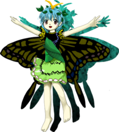

- Welcome to Touhou Wiki!
- Please register to edit. For assistance, check in with our Discord server or IRC channel.
Eternity Larva
Eternity Larva Etanity Larva, Etarnity Larva | |
|---|---|
|
Eternity Larva in Hidden Star in Four Seasons The Butterfly Fairy who Approaches GodMore Character Titles | |
| Species | |
| Abilities |
Scattering scales |
| Location | |
Music Themes | |
| |
Appearances | |
| Official Games | |
| |
| Print Works | |
| |
Eternity Larva (エタニティラルバ Etanitiraruba) is a fairy embodying the growth, rebirth, and metamorphosis of insects.
General Information[edit]
Eternity appeared as the Stage 1 midboss and Boss in Hidden Star in Four Seasons.
Abilities[edit]
- Scattering scales
Her ability refers to the feature of most Lepidoptera of having scales covering their bodies and wings. The wings, head, and parts of the thorax and abdomen of butterflies and moths are covered with minute scales which give them an extraordinary variety of colors and patterns. Most scales are lamellar, or blade-like.
Eternity uses her scales as projectiles in danmaku patterns.
- Controlling berserk lifeforce
An ability that Larva awakened after the Four Seasons incident. After using Clownpiece's torch to make her own lifeforce go out of control, she used it to instantly change the wintery surroundings into a summer scenery, complete of warm sun and palm trees.[2]
Background Information[edit]
Origin[edit]
Okina Matara's speculation suggests that Eternity may have been inspired by the story of the Tokoyo god. According to the Nihon Shoki, in 7th century Japan, a group of villagers formed a cult to worship an insect as the Tokoyo god (常世神, Tokoyo no Kami), or "the god of the everlasting world".[3] It is commonly believed that the insect was in fact a swallowtail caterpillar, which may explain Eternity's basis as swallowtail butterfly fairy.
Name[edit]
Her full name is Eternity Larva (エタニティラルバ). Eternity may signify her theme of metamorphosis and rebirth, while Larva is the juvenile life stage of holometaboulous insects like moths and butterflies. Considering Eternity is probably based on Tokoyo no kami, her name is probably a reflection of her origin as said kami. The term Tokoyo itself was used to refer to a far-away place where people would live eternally in prosperity and wealth, which could mean that the name Eternity might be a refference to that "eternal" land. In the demo of Hidden Star in Four Seasons, her name was given as both Etarnity Larva in-game and Etanity Larva in the omake; both being more direct transliterations of エタニティ (eternity). These were corrected in the full version.
Design[edit]
Eternity has peach-colored eyes and short light blue hair. She is modeled after an Asian swallowtail, having a pair of very large black and yellow wings, spotted with bits of blue and purple and a large two-pronged yellow osmeterium on her head which is a defensive organ found on all Swallowtail butterfly larvae. She wears a black shirt with black and yellow swallowtail-inspired sleeves and collar, a line of blue spots down the left side, and a large green leaf that encompasses her torso, resembling a pupa. She wears a light green skirt showing two thin irregular black rings and one ring of white spots of various alternating sizes at the edge. Eternity wears a crown of leaves atop her head. She does not wear any footwear.
Story[edit]
Games[edit]
- Hidden Star in Four Seasons
Due to the incident in Hidden Star in Four Seasons, Eternity goes berserk alongside all the other fairies. Overwhelmed with power, she battles the player in the skies at the height of summer but is promptly defeated.
In Cirno's Extra Stage scenario, it is revealed that Cirno used the door on Eternity's back to re-enter Ushirodo-no-Kuni and challenge Okina Matara to a rematch. Somehow, this resulted in Cirno drawing on the power of doyou, the border between seasons, which ultimately contributed to Okina's defeat. As it was Eternity's door that led to this result, Okina speculates that Eternity may actually be a Tokoyo god, one of Okina's enemies, and wonders if it was a coincidence.
Literature[edit]
- Visionary Fairies in Shrine
Larva appears in chapter 8 of Visionary Fairies in Shrine, where Cirno uses her to win a bug-catching competition against Sunny Milk, Luna Child, and Star Sapphire. After playing with them, Larva tells the three fairies about the events of Hidden Star in Four Seasons as Cirno explained them to her.
In chapter 9, the three fairies coincidentally find Larva's underground home in the Forest of Magic, and invite her to the "Deep Winter Red-hot Fire Festival" they organized for the day after. Larva therefore goes to the festival, where she meets Clownpiece for the first time and reveals the newly aquired power of Clownpiece's torch, that after the Four Seasons incident is now able to make life force go berserk.
Relationships[edit]
Eternity and Cirno are implied to have known each other before the events of Hidden Star in Four Seasons. In Hidden Star in Four Seasons, Eternity notices Cirno's tan before they fight to see who the summer belongs to. Eternity also appears in Cirno's ending.
Spell Cards[edit]
| Name | Translated | Comments | Games | Stage | ||
|---|---|---|---|---|---|---|
| Total: 7 | ||||||
| 蝶符「ミニットスケールス」 | Butterfly Sign "Minute Scales" | HSiFS | St. 1: E/N | |||
| 蝶符「アゲハの鱗粉」 | Butterfly Sign "Swallowtail's Scales" | HSiFS | St. 1: H/L | |||
| 蝶符「フラッタリングサマー」 | Butterfly Sign "Fluttering Summer" | HSiFS | St. 1: E/N | |||
| 蝶符「真夏の羽ばたき」 | Butterfly Sign "Midsummer Wingbeats" | HSiFS | St. 1: H/L | |||
| 蝶符「バタフライドリーム」 | Butterfly Sign "Butterfly Dream" | VD | Tuesday - 2 | |||
| 蝶符「纏わり付く鱗粉」 | Butterfly Sign "Surrounding Scales" | VD | Tuesday - 3 | |||
| 夢蝶「クレージーバタフライ」 | Dream Butterfly "Crazy Butterfly" | VD | Wrong Sunday - 4 | |||
Additional Information[edit]
- When Okina Matara wonders if Eternity is actually the Tokoyo god, she states that the Tokoyo god is one of her enemies. This may allude to the fact that the cult of the Tokoyo god was brought to an end when the leader of the cult was arrested and executed by an official named Hata no Kawakatsu.[3] Later, Hata no Kawakatsu would occasionally be equated with Matara-jin due to their similar divine natures as gods of the performing arts.
- Eternity Larva appears on the demo CD cover of Hidden Star in Four Seasons.
Fandom[edit]
Official Profiles[edit]
|  | ○１面ボス 神に近づく蝶の妖精 エタニティラルバ 種族：妖精 アゲハ蝶の妖精。 チルノと同じく、何らかの力でいつもより力を持っている。言わば暴走状態である。 危険を察知すると、触角から弾幕と臭い匂いを出すらしい。 |
Stage 1 Boss: The Butterfly Fairy who Approaches God Eternity Larva Species: Fairy A swallowtail butterfly fairy. Like Cirno, she's stronger than usual due to some strange force. She's in berserk mode, basically. Apparently when she senses danger, she spews danmaku and a foul stench from her antennae. |
Official Sources[edit]
- 2017/05/07 Hidden Star in Four Seasons trial - omake.txt (trial profile, stage 1 dialogue)
References[edit]
- ↑ Visionary Fairies in Shrine - Chapter 9
- ↑ Visionary Fairies in Shrine - Chapter 10
- ↑ 3.0 3.1 Nan-Yao Su; Tokoyo no Kami: A Caterpillar Worshipped by a Cargo Cult in Ancient Japan, American Entomologist, Volume 60, Issue 3, 1 July 2014, Pages 182–188, https://doi.org/10.1093/ae/60.3.182
| This page is part of Project Characters, a Touhou Wiki project that aims to write proper descriptions for all official characters of Touhou Project. Please keep the character page guidelines in mind when contributing. |